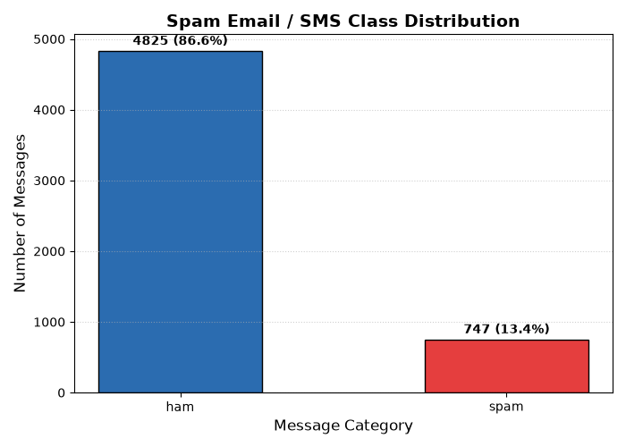
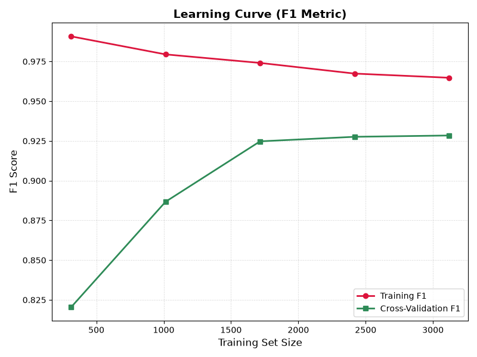
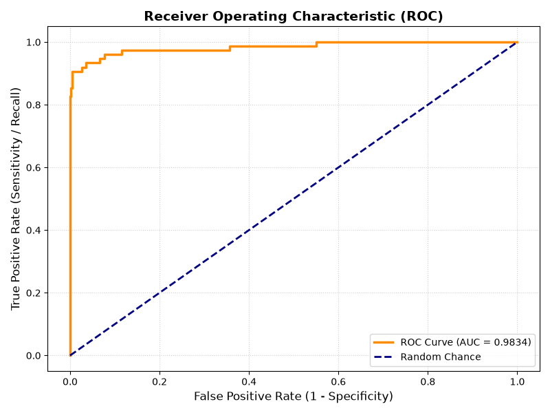

Spam detection is a Supervised Binary Text Classification Problem:
In spam classification, errors are not equal in cost:
We source the benchmark SMS Spam Collection v.1 curated by Tiago A. Almeida and José María Gómez Hidalgo:
v1 (target label), v2 (raw message text), and 3 unnamed trailing artifacts (Unnamed: 2, 3, 4 containing sporadic split text).ISO-8859-1 (Latin-1) encoding due to UK currency symbols (£) and accents. UTF-8 decoding throws UnicodeDecodeError.Strict Engineering Protocol: The file data/raw/spam.csv is treated as read-only and cryptographically immutable.
make_dataset.py, we extract only v1 and v2, discarding the trailing NaN columns without altering source files.Our exploratory analysis reveals a profound skew in the underlying population:
Text Length Bimodality: Spam messages display distinct statistical characteristics compared to legitimate human conversations:

Consider a trivial dummy classifier $f_{\text{dummy}}(\mathbf{x}) = 0$ (predicts Ham 100% of the time):
Raw accuracy is completely useless and actively misleading on imbalanced datasets. We must evaluate via Precision, Recall, F1-Score, and PR-AUC.
Raw human SMS messages are riddled with noise that artificially inflates dictionary dimensionality without carrying discriminatory signal:
"FREE", "Free", and "free" map to a single token index in the feature vector.re.sub(r'[^a-zA-Z0-9\s]', ' ', text).
✓ Preserves explicit currency signs (£, $, €) and tokens <URL> because they carry massive spam predictive weight!
Definition: Data Enrichment is the deliberate process of augmenting raw input features with domain-specific behavioral signals that models cannot easily infer from bag-of-words alone.
Spammers try to evade simple word filters using alternative spellings, but their psychological pressure tactics remain constant:
Our Professor mandated a strict 70% / 20% / 10% partition. Here is the rigorous statistical justification:
| Split Configuration | Statistical Impact & Failure Mode |
|---|---|
| 80% / 10% / 10% | Only 557 validation samples. High variance in tuning metrics; risks suboptimal hyperparameter selection. |
| 50% / 25% / 25% | Underfitting. Training vocabulary shrinks drastically; rare spam words become completely unseen ($N_{ki}=0$). |
| 95% / 5% / 0% (No Test) | Disastrous. No holdout estimate. Optimization overfits validation set; false sense of perfection. |
| 70% / 20% / 10% (Ours) | Optimal Pareto trade-off between parameter estimation mass and validation stability. |
Converts discrete tokens into continuous importance vectors in $\mathbb{R}^V$:
N-Gram Coverage: We adopt unigrams + bigrams ($1, 2$) with max_features=5000. This captures critical compound triggers like "cash prize", "claim now", "urgent reply".
Fatal Exam Mistake: Fitting vectorizer or scalers on the entire dataset before splitting!
If a word appears in Test that never appeared in Train, its TF-IDF vector is correctly zeroed out, accurately reflecting real-world deployment behavior.
If an email contains a novel word $w_{\text{new}}$ unseen in Spam during training, $P(w_{\text{new}} \mid \text{Spam}) = 0$. In raw multiplication, the entire probability collapses to 0, ignoring all other 20 spam words!
Log-Space Numerical Stability: To prevent floating-point underflow when multiplying thousands of small decimals, we sum logarithms:
Maps linear combinations of features to bounded posterior probabilities:
Loss Function: Binary Cross-Entropy (Log-Loss):
Test Results: 100.00% Precision (0 False Positives!), 74.67% Recall, 96.59% Accuracy.
Finds the optimal separating hyperplane with maximum geometric margin $\frac{2}{\|\mathbf{w}\|}$:
Trained strictly on the 70% Training partition ($N=3,900$) using Stratified K-Fold to prevent fold distribution drift:
Interpretation: The extremely low standard deviation ($\pm 0.0194$) proves the model is not relying on random text artifacts.

Training and cross-validation curves smoothly converge as sample size reaches 3,000+ messages, confirming healthy generalization with no high-variance overfitting.
| Algorithm | Accuracy | Precision | Recall | F1-Score | ROC-AUC |
|---|---|---|---|---|---|
| Multinomial NB (Ours) | 97.85% | 97.01% | 86.67% | 0.9155 | 0.9834 |
| Linear SVM (SVC) | 98.03% | 97.06% | 88.00% | 0.9231 | 0.9780 |
| Logistic Regression | 96.59% | 100.00% | 74.67% | 0.8550 | 0.9712 |
Test Confusion Matrix Breakdown:

Artifact Isolation: Both the trained model and the fitted vocabulary vectorizer are dumped together. At inference time, incoming raw strings are transformed by the exact saved vectorizer.
Our solution is fully packaged and deployed as a live microservice on Port 5004:
✓ Live Web App accessible directly in browser with real-time UI, input history, and confidence gauges!
Q1: Why Multinomial Naive Bayes instead of Gaussian Naive Bayes?
Answer: Text features represent word count or TF-IDF term frequency vectors which are non-negative and discrete/sparse. Gaussian NB assumes continuous normal distributions ($\mathcal{N}(\mu, \sigma^2)$), which is biologically and statistically false for sparse text data. Multinomial NB directly models word count event spaces.
Q2: Why did you set Laplace smoothing $\alpha=0.1$ instead of $1.0$?
Answer: In a large vocabulary ($V=5,000$), standard $\alpha=1.0$ (add-one smoothing) adds $1.0 \times 5,000 = 5,000$ pseudo-counts to the denominator, excessively diluting probabilities for rare words. Setting $\alpha=0.1$ (Lidstone smoothing) prevents zero-probability collapse while preserving sharp probability discriminability.
Q3: How does your 70/20/10 split prevent data leakage compared to a standard 80/20 split?
Answer: In a standard 80/20 split, the 20% is often reused for both hyperparameter tuning and final evaluation, causing "leakage via optimization". In 70/20/10, the 20% validation set is used strictly for tuning $\alpha$ and threshold $\theta$, while the 10% test set remains completely pristine until final benchmark reporting.
Q4: Why not use SVM with RBF Kernel or Random Forest?
Answer: Linear classifiers are strictly optimal for high-dimensional sparse text vectors ($D=5,000 \gg N=3,900$). Furthermore, our syllabus strictly restricts models to Linear SVM, Naive Bayes, and Logistic Regression.